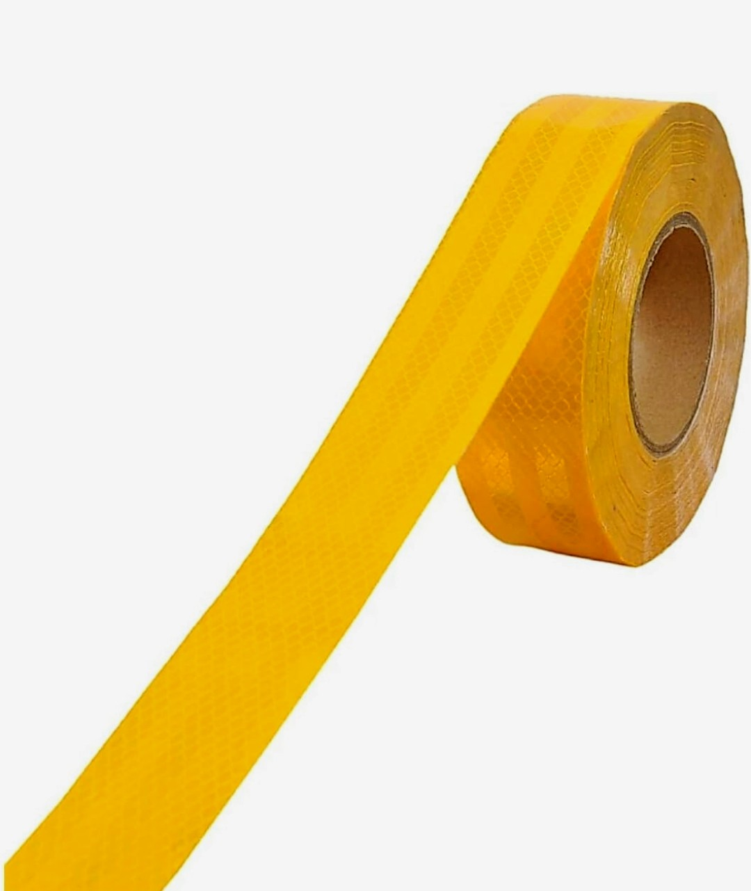
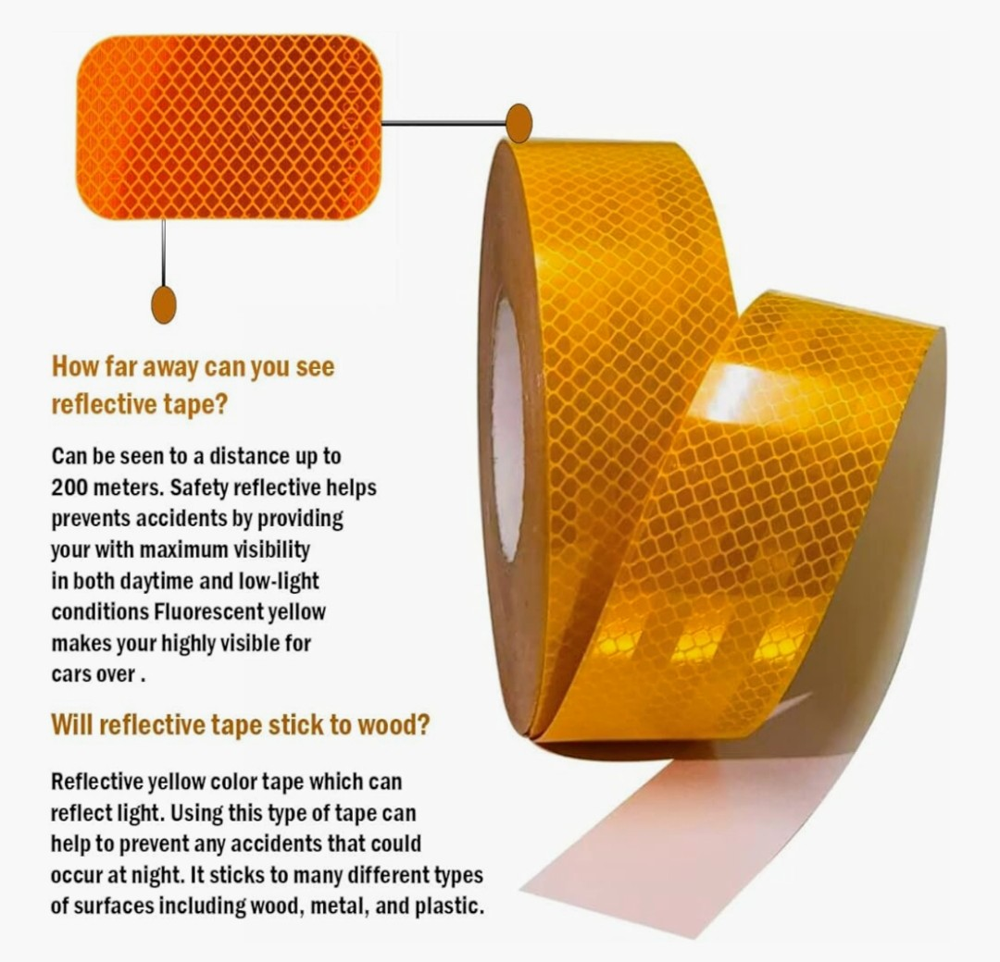
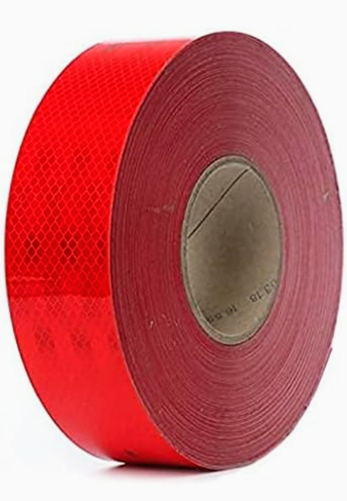
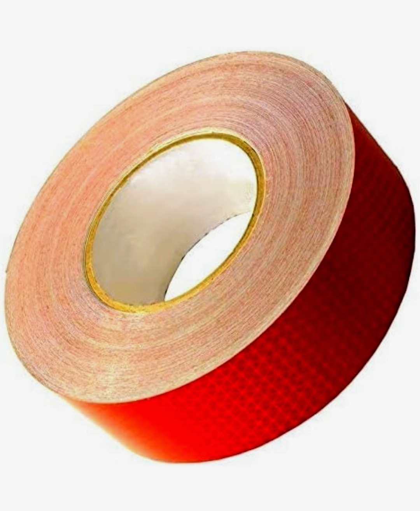

High-visibility reflective tapes designed to enhance safety
by improving visibility in low-light and night-time conditions.




Product Overview
Reflective Tapes are safety marking materials designed to
reflect light back to its source, improving visibility
during night-time, fog, and low-light conditions.
These tapes are widely used on vehicles, road barriers,
construction equipment, and industrial areas to reduce
accidents and improve hazard awareness.
Key Features
High reflectivity for night-time visibility
Strong adhesive backing for secure bonding
Weather and water resistant
Durable for indoor and outdoor use
Available in multiple colours and patterns
Specifications
Material: PVC / PET with reflective coating
Adhesive: Pressure-sensitive adhesive
Width: Multiple sizes available
Colour: Red, White, Yellow, Silver (varies)
Usage: Safety marking and visibility enhancement
Applications & Use Cases
Commercial and private vehicles
Road dividers, barricades, and signboards
Construction sites and safety zones
Industrial equipment and warehouses
Trailers, trucks, and transport vehicles
Best Suited For
Transport operators and fleet owners
Road safety and traffic management authorities
Construction and infrastructure projects
Industrial units and warehouses
Selection Note
For Indian road and industrial conditions, reflective tape
selection should be based on exposure to sunlight, dust,
and moisture. High-grade reflective tapes are recommended
for highways and heavy vehicle usage, while standard grades
are suitable for indoor and low-exposure applications.
Proper surface cleaning ensures long-lasting adhesion.
Commonly Used Along With
Safety Cones and Barricades
Warning Stickers and Signage Boards
Vehicle Safety Accessories
Ready to order or need more details?Send us your requirement directly on WhatsApp — we respond within minutes.
Where is reflective tape commonly used in India?
Reflective tape is widely used on trucks, trailers,
barricades, road signs, construction sites, and industrial
equipment to improve night-time visibility and safety.
Is reflective tape suitable for outdoor use?
Yes. Reflective tapes are designed to withstand outdoor
conditions, including rain, dust, and sunlight, depending
on the grade selected.
Does reflective tape lose brightness over time?
Prolonged exposure to harsh sunlight and abrasion may
gradually reduce reflectivity. Using high-quality tape
improves durability and visibility retention.
Can reflective tape be applied on curved surfaces?
Yes. Most reflective tapes are flexible and can be applied
on slightly curved surfaces with proper surface preparation.
Is surface preparation important before application?
Yes. Surfaces should be clean, dry, and free from dust or
oil to ensure strong adhesion and long service life.
Are bulk rolls and custom widths available?
Yes. Reflective tapes can be supplied in bulk rolls,
custom widths, and colour combinations for commercial
and project-based requirements.